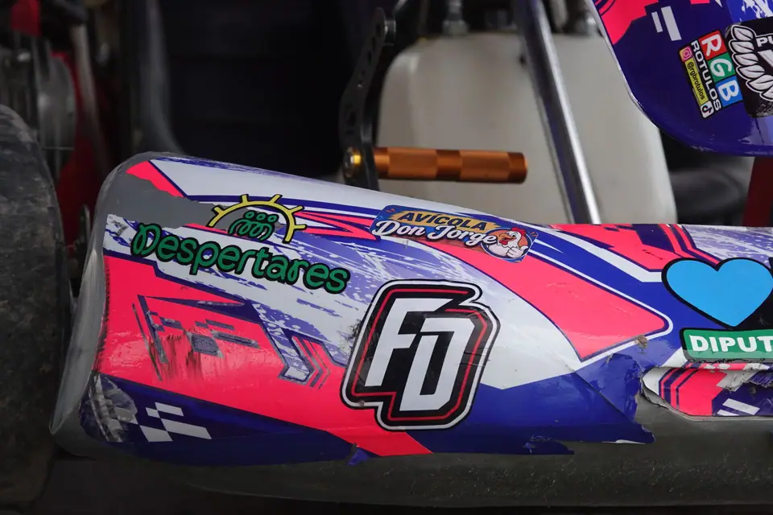

Paddock & pista
Galería
Las mejores imágenes del campeonato: largadas, boxes y la gente que hace posible cada fecha.
8 fotos
Sin resultados
No hay fotos para esa búsqueda. Probá con otra fecha o tipo de sesión.

Paddock & pista
8 fotos
Sin resultados
No hay fotos para esa búsqueda. Probá con otra fecha o tipo de sesión.